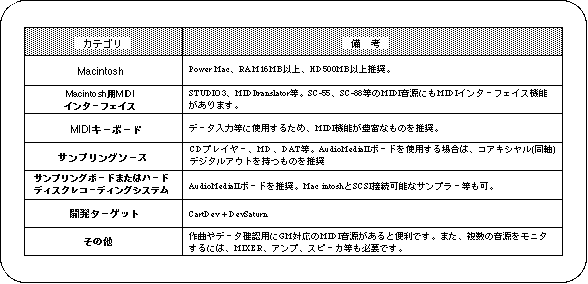
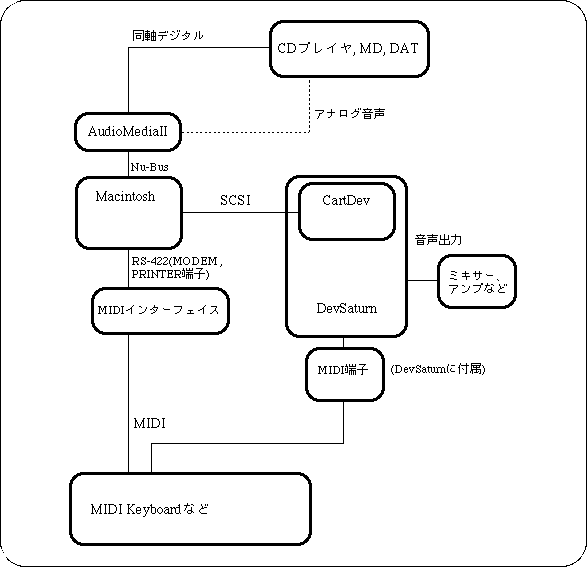
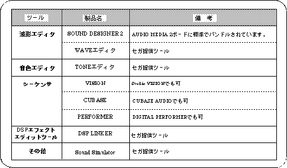

Return to previous page | Return to menu | Go to next page
For software, here are representative product names for the minimum required tools. Also, since there are many hardware models, please refer to only the categories and required functions.

1) In the system of CartDev. + DevSaturn, PCM sampling from optical digital input by Sega Wave Editor cannot be performed.
2) For Saturn game sound production, the importance of PCM sampling is high, so we recommend the AudioMediaII board to improve development efficiency.
The figure below shows the hardware environment for sound designers recommended by Sega.

